Module 5: Multivariate Regression
Stefano Cacciatore
September 06, 2024
Last updated: 2024-09-06
Checks: 7 0
Knit directory: myproject/
This reproducible R Markdown analysis was created with workflowr (version 1.7.1). The Checks tab describes the reproducibility checks that were applied when the results were created. The Past versions tab lists the development history.
Great! Since the R Markdown file has been committed to the Git repository, you know the exact version of the code that produced these results.
Great job! The global environment was empty. Objects defined in the global environment can affect the analysis in your R Markdown file in unknown ways. For reproduciblity it’s best to always run the code in an empty environment.
The command set.seed(20240905) was run prior to running
the code in the R Markdown file. Setting a seed ensures that any results
that rely on randomness, e.g. subsampling or permutations, are
reproducible.
Great job! Recording the operating system, R version, and package versions is critical for reproducibility.
Nice! There were no cached chunks for this analysis, so you can be confident that you successfully produced the results during this run.
Great job! Using relative paths to the files within your workflowr project makes it easier to run your code on other machines.
Great! You are using Git for version control. Tracking code development and connecting the code version to the results is critical for reproducibility.
The results in this page were generated with repository version 9cfbfa1. See the Past versions tab to see a history of the changes made to the R Markdown and HTML files.
Note that you need to be careful to ensure that all relevant files for
the analysis have been committed to Git prior to generating the results
(you can use wflow_publish or
wflow_git_commit). workflowr only checks the R Markdown
file, but you know if there are other scripts or data files that it
depends on. Below is the status of the Git repository when the results
were generated:
Ignored files:
Ignored: .BidstackAds-b51a10b9/
Ignored: .RData
Ignored: .Rhistory
Ignored: .Trash/
Ignored: .android/
Ignored: Templates/
Ignored: Untitled Folder/
Ignored: ilifu/
Ignored: sql/
Untracked files:
Untracked: Library/
Untracked: .AliView/
Untracked: .CFUserTextEncoding
Untracked: .DS_Store
Untracked: .IdentityService/
Untracked: .R/
Untracked: .RDataTmp
Untracked: .Rapp.history
Untracked: .ServiceHub/
Untracked: .Xauthority
Untracked: .anaconda/
Untracked: .anyconnect
Untracked: .aspnet/
Untracked: .azcopy/
Untracked: .bash_history
Untracked: .bash_profile
Untracked: .bashrc
Untracked: .bidstack-device-id
Untracked: .cache/
Untracked: .cisco/
Untracked: .conda/
Untracked: .condarc
Untracked: .config/
Untracked: .continuum/
Untracked: .cups/
Untracked: .docker/
Untracked: .dotnet/
Untracked: .dropbox/
Untracked: .gitconfig
Untracked: .gitignore
Untracked: .globusonline/
Untracked: .gsutil/
Untracked: .idlerc/
Untracked: .ipynb_checkpoints/
Untracked: .ipython/
Untracked: .jupyter/
Untracked: .keras/
Untracked: .lesshst
Untracked: .local/
Untracked: .matplotlib/
Untracked: .mono/
Untracked: .nuget/
Untracked: .nuuid.ini
Untracked: .oracle_jre_usage/
Untracked: .pdfbox.cache
Untracked: .python_history
Untracked: .sqlite_history
Untracked: .ssh/
Untracked: .tcshrc
Untracked: .templateengine/
Untracked: .test.txt.swp
Untracked: .viminfo
Untracked: .vscode/
Untracked: .wget-hsts
Untracked: .wine/
Untracked: .wing101-9
Untracked: .xonshrc
Untracked: .zprofile
Untracked: .zprofile.pysave
Untracked: .zsh_history
Untracked: .zsh_sessions/
Untracked: .zshrc
Untracked: Applications (Parallels)/
Untracked: Applications/
Untracked: Chunk.R
Untracked: Desktop/
Untracked: Documents/
Untracked: Downloads/
Untracked: Dropbox/
Untracked: Library/
Untracked: Movies/
Untracked: Music/
Untracked: Parallels/
Untracked: Pedigree.R
Untracked: Pictures/
Untracked: PlayOnMac's virtual drives
Untracked: Projects/
Untracked: Public/
Untracked: Untitled.ipynb
Untracked: _TyranoGameData/
Untracked: anaconda3/
Untracked: annotation/
Untracked: bcftools-1.9.tar.bz2
Untracked: bcftools-1.9/
Untracked: clumping_EX.txt
Untracked: df.csv
Untracked: df_R_tut.csv
Untracked: eval "$(ssh-agent -s)"
Untracked: eval "$(ssh-agent -s)".pub
Untracked: gfortran-4.8.2-darwin13.tar.bz2
Untracked: gnomad.genomes.v3.1.1.sites.chr1.vcf.bgz
Untracked: myenv/
Untracked: text.txt
Untracked: venv/
Note that any generated files, e.g. HTML, png, CSS, etc., are not included in this status report because it is ok for generated content to have uncommitted changes.
There are no past versions. Publish this analysis with
wflow_publish() to start tracking its development.
Unsupervised Learning (UL)
Unsupervised Learning (UL) is a technique that uncovers patterns in data without predefined labels or extensive human input. Unlike supervised learning, which relies on data with known outcomes, UL focuses on exploring relationships within the data itself.
A key approach in UL is clustering, where data points are grouped based on their similarities. Common methods include K-means clustering, Hierarchical clustering, and Probabilistic clustering. DBSCAN (Density-Based Spatial Clustering of Applications with Noise) is another powerful clustering method that identifies clusters based on data density and can handle noise effectively.
For instance, in mRNA expression analysis, clustering
can group genes with similar expression profiles, while
DBSCAN might reveal clusters of genes with high expression
density and identify outliers.
Additionally, dimensionality reduction techniques like Principal Component Analysis (PCA) and t-Distributed Stochastic Neighbor Embedding (t-SNE) are used to simplify and visualize complex data. These methods help reveal hidden structures and insights, such as the genetic basis of various conditions.
# Load necessary libraries
library(dplyr)
library(cluster) # For clustering algorithms
library(factoextra) # For cluster visualization
library(ggplot2) # For data visualization
library(Rtsne) # For t-SNE visualization
library(stats) # For K-means
library(tidyr) # For handling missing data
library(dendextend) # For Hierarchical Clustering
library(ggfortify)
library(dbscan)
library(mclust) # For probabilistic clustering
library(caret) # For scaling1. K-MEANS CLUSTERING
Step 1: Prepare Data
data <- iris
# Remove "Species" column as this is not needed for unsupervised learning.
clean_data <- data[,c(1:4)]
# Step 1: Remove rows with missing values
clean_data <- na.omit(clean_data)
# Step 2: Normalization/Scaling
clean_data <- scale(clean_data)Step 2: Data Filtering and Reduction
This step involves filtering out variables with low variance and any missing values to ensure our data is clean and robust for analysis.
The aim is to filter out variables that are unlikely to be informative for distinguishing between different samples.
# Step 1: Calculate the variance for each gene (row)
variances <- apply(clean_data, 1, var)
# Step 2: Set a threshold for filtering low variance genes
threshold <- quantile(variances, 0.25) # Lower 25% variance genes
# Step 3: Retain only the genes with variance above the threshold
filtered_data <- clean_data[variances > threshold, ]
# Step 4: Remove duplicate rows
filtered_data <- unique(filtered_data)Step 3: Clustering Prep & Criterion Evaluation
Determine the number of clusters and evaluation criteria to ensure meaningful clusters.
Use methods like the elbow method, silhouette score, or cross-validation to decide the optimal number of clusters.
# 1. Elbow method
fviz_nbclust(filtered_data, kmeans, method = "wss") +
labs(subtitle = "Elbow Method for Optimal K")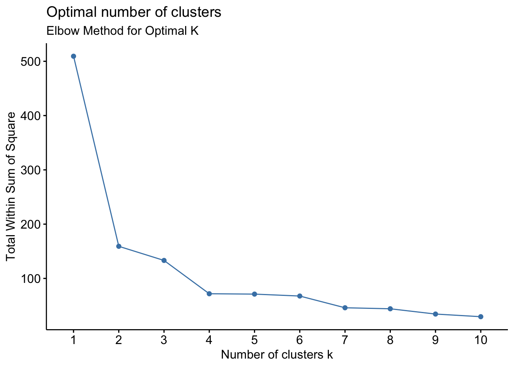
# 2. Silhouette method
fviz_nbclust(filtered_data, kmeans, method = "silhouette") +
labs(subtitle = "Silhouette Method for Optimal K")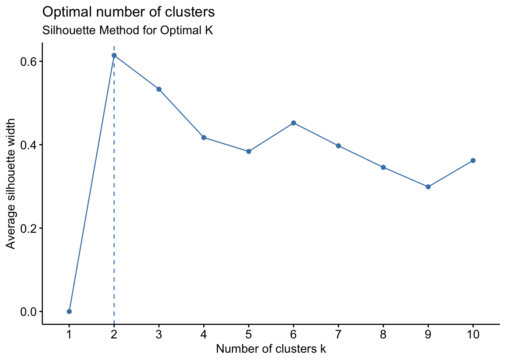
Step 4: K-means Clustering & Parameter Selection
Perform K-means clustering with k = 2
set.seed(123)
k <- 2# Use Euclidean distance
kmeans_res_euclidean <- kmeans(filtered_data, centers = k, nstart = 25)
# For comparison, use Manhattan distance
kmeans_res_manhattan <- kmeans(dist(filtered_data, method = "manhattan"), centers = k, nstart = 25)
# Visualize the clusters
fviz_cluster(kmeans_res_euclidean, data = filtered_data) +
labs(title = "K-means Clustering with Euclidean Distance")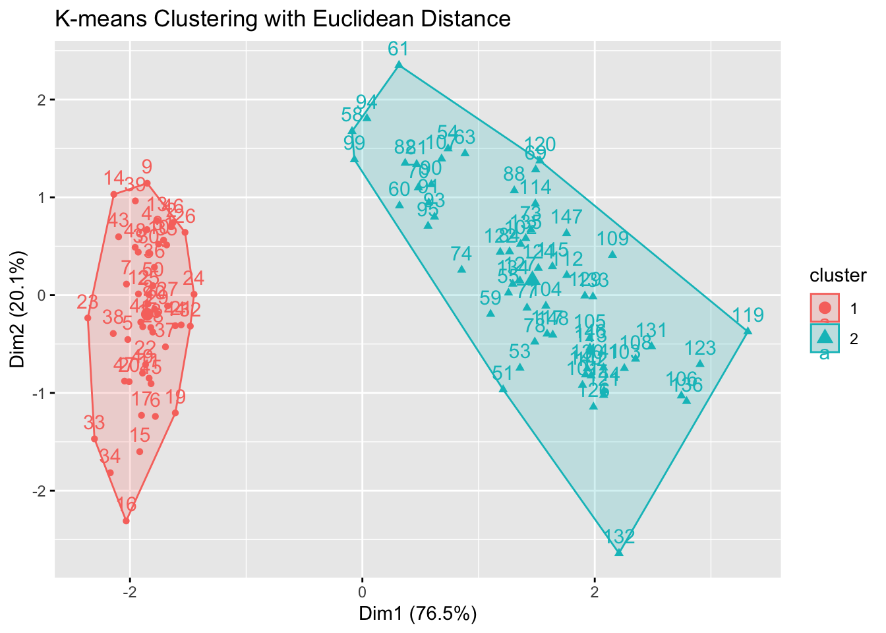
fviz_cluster(kmeans_res_manhattan, data = filtered_data) +
labs(title = "K-means Clustering with Manhattan Distance")Step 5: Visualization with PCA
Simplify and visualize the dataset using PCA to understand the structure and separation of clusters.
Principal Component Analysis (PCA): Reduces dimensionality while preserving variance, helping to visualize data clusters.
# PCA Visualization
pca_res <- prcomp(filtered_data, scale. = TRUE)
fviz_pca_ind(pca_res,
geom.ind = "point",
col.ind = as.factor(kmeans_res_euclidean$cluster)) +
labs(title = "PCA Visualization")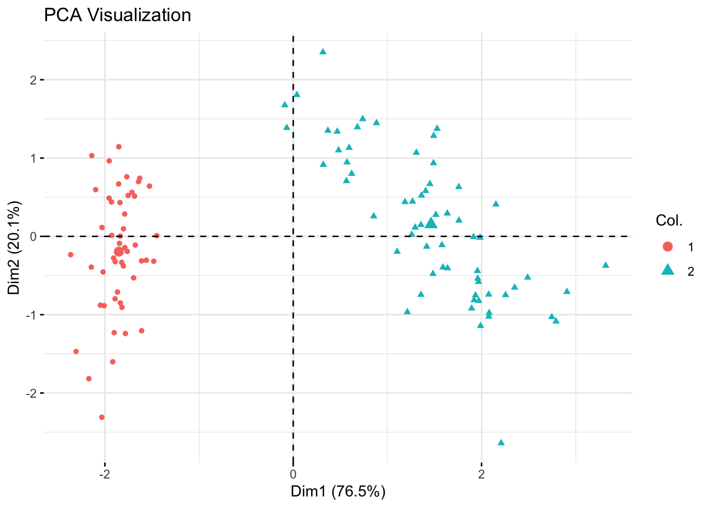
Step 6: Visualization with t-SNE
Use t-SNE to visualize high-dimensional data in a lower-dimensional space.
Captures complex nonlinear relationships and helps visualize clusters in a 2D or 3D space.
# t-SNE Visualization
set.seed(123)
tsne_res <- Rtsne(as.matrix(filtered_data), dims = 2, perplexity = 30, verbose = TRUE)Performing PCA
Read the 111 x 4 data matrix successfully!
Using no_dims = 2, perplexity = 30.000000, and theta = 0.500000
Computing input similarities...
Building tree...
Done in 0.00 seconds (sparsity = 0.917945)!
Learning embedding...
Iteration 50: error is 44.627595 (50 iterations in 0.01 seconds)
Iteration 100: error is 45.903708 (50 iterations in 0.01 seconds)
Iteration 150: error is 45.749863 (50 iterations in 0.01 seconds)
Iteration 200: error is 45.634573 (50 iterations in 0.01 seconds)
Iteration 250: error is 45.790970 (50 iterations in 0.01 seconds)
Iteration 300: error is 0.604419 (50 iterations in 0.01 seconds)
Iteration 350: error is 0.059675 (50 iterations in 0.01 seconds)
Iteration 400: error is 0.055524 (50 iterations in 0.01 seconds)
Iteration 450: error is 0.055052 (50 iterations in 0.01 seconds)
Iteration 500: error is 0.053743 (50 iterations in 0.01 seconds)
Iteration 550: error is 0.054384 (50 iterations in 0.01 seconds)
Iteration 600: error is 0.054418 (50 iterations in 0.01 seconds)
Iteration 650: error is 0.054351 (50 iterations in 0.01 seconds)
Iteration 700: error is 0.054478 (50 iterations in 0.01 seconds)
Iteration 750: error is 0.055578 (50 iterations in 0.01 seconds)
Iteration 800: error is 0.054039 (50 iterations in 0.01 seconds)
Iteration 850: error is 0.053165 (50 iterations in 0.01 seconds)
Iteration 900: error is 0.053062 (50 iterations in 0.01 seconds)
Iteration 950: error is 0.053539 (50 iterations in 0.01 seconds)
Iteration 1000: error is 0.052561 (50 iterations in 0.01 seconds)
Fitting performed in 0.18 seconds.# Convert t-SNE results to a data frame for plotting
tsne_data <- as.data.frame(tsne_res$Y)
colnames(tsne_data) <- c("Dim1", "Dim2")
# Map the clusters from k-means result to the t-SNE data
tsne_data$Cluster <- as.factor(kmeans_res_euclidean$cluster)
# Plot t-SNE results
library(ggplot2)
ggplot(tsne_data, aes(x = Dim1, y = Dim2, color = Cluster)) +
geom_point() +
labs(title = "t-SNE Visualization", x = "Dimension 1", y = "Dimension 2")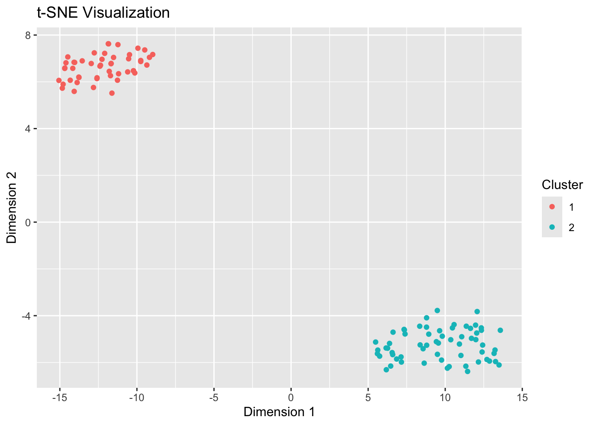
T-SNE Parameter optimization:
One could adjust parameters such as perplexity,
exaggeration, and PCAComps iteratively based
on the visualization results.
Evaluate if clusters are too separated or not well defined. Modify exaggeration_num and perplexity to refine cluster separation and representation.
Lets see what happens when we adjust some parameters?
# Set seed for reproducibility
set.seed(1)
# Example data: replace this with your actual data
expression <- filtered_data
expression_standardized <- scale(expression) # Standardize data
# Parameters
algorithm <- 'barnes_hut' # Not directly set in R, handled internally
distance_metric <- 'euclidean' # Rtsne does not support 'spearman' directly
exaggeration_num <- 4
PCAComps <- 0
pca_comps <- if (PCAComps == 0) NULL else PCAComps # Set PCA dimension reduction
perp_num <- 30
# Optionally apply PCA if PCAComps > 0
if (!is.null(pca_comps)) {
pca_res <- prcomp(expression_standardized, center = TRUE, scale. = TRUE)
expression_pca <- pca_res$x[, 1:pca_comps]
} else {
expression_pca <- expression_standardized
}
# Run t-SNE
tsne_res <- Rtsne(expression_pca, dims = 2, pca = PCAComps > 0, perplexity = perp_num,
check_duplicates = FALSE, verbose = TRUE)Read the 111 x 4 data matrix successfully!
Using no_dims = 2, perplexity = 30.000000, and theta = 0.500000
Computing input similarities...
Building tree...
Done in 0.00 seconds (sparsity = 0.918757)!
Learning embedding...
Iteration 50: error is 44.751156 (50 iterations in 0.01 seconds)
Iteration 100: error is 45.308458 (50 iterations in 0.01 seconds)
Iteration 150: error is 44.348748 (50 iterations in 0.01 seconds)
Iteration 200: error is 45.104693 (50 iterations in 0.01 seconds)
Iteration 250: error is 45.680708 (50 iterations in 0.01 seconds)
Iteration 300: error is 0.734819 (50 iterations in 0.01 seconds)
Iteration 350: error is 0.059571 (50 iterations in 0.01 seconds)
Iteration 400: error is 0.054598 (50 iterations in 0.01 seconds)
Iteration 450: error is 0.050394 (50 iterations in 0.01 seconds)
Iteration 500: error is 0.053462 (50 iterations in 0.01 seconds)
Iteration 550: error is 0.056509 (50 iterations in 0.01 seconds)
Iteration 600: error is 0.055215 (50 iterations in 0.01 seconds)
Iteration 650: error is 0.054666 (50 iterations in 0.01 seconds)
Iteration 700: error is 0.053571 (50 iterations in 0.01 seconds)
Iteration 750: error is 0.054591 (50 iterations in 0.01 seconds)
Iteration 800: error is 0.056016 (50 iterations in 0.01 seconds)
Iteration 850: error is 0.054679 (50 iterations in 0.01 seconds)
Iteration 900: error is 0.055034 (50 iterations in 0.01 seconds)
Iteration 950: error is 0.055220 (50 iterations in 0.01 seconds)
Iteration 1000: error is 0.054738 (50 iterations in 0.01 seconds)
Fitting performed in 0.19 seconds.# Convert t-SNE results to a data frame for plotting
tsne_data <- as.data.frame(tsne_res$Y)
colnames(tsne_data) <- c("Dim1", "Dim2")
# Here we use the cluster labels from k-means:
set.seed(1)
cluster_labels <- kmeans(expression_standardized, centers = 3)$cluster
tsne_data$Cluster <- as.factor(cluster_labels)
# Plotting t-SNE results
ggplot(tsne_data, aes(x = Dim1, y = Dim2, color = Cluster)) +
geom_point() +
labs(title = "t-SNE Visualization", x = "Dimension 1", y = "Dimension 2") +
theme_minimal()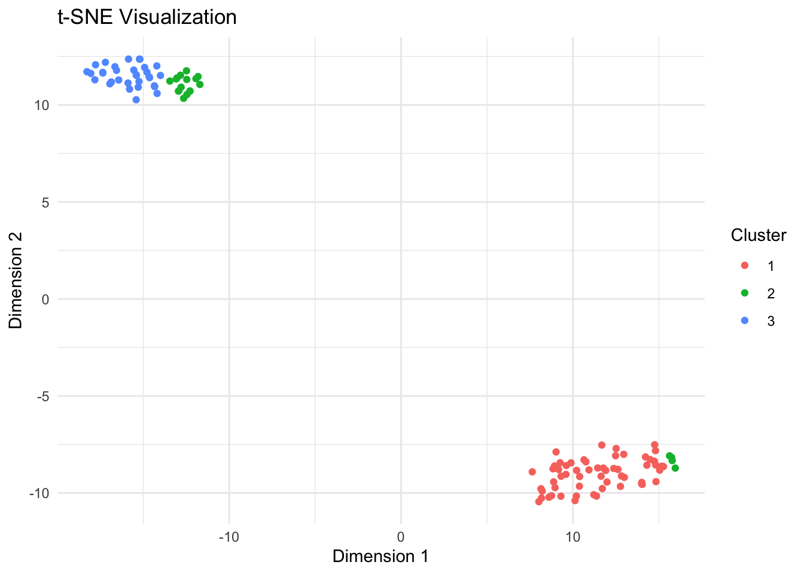
Assessing Clustering Performance?
Within-Cluster Sum of Squares (Inertia)
- Inertia measures the compactness of clusters.
- Lower values indicate better clustering.
# Compute inertia for K-means clustering
inertia_euclidean <- kmeans_res_euclidean$tot.withinss
inertia_manhattan <- kmeans_res_manhattan$tot.withinss
# Print inertia values
cat("Inertia for Euclidean K-means:", inertia_euclidean, "\n")Inertia for Euclidean K-means: 159.1761 cat("Inertia for Manhattan K-means:", inertia_manhattan, "\n")Inertia for Manhattan K-means: 18284.96 We see that our Euclidean K-means model produced more compact clusters.
Silhouette Analysis
Silhouette scores measure how similar each point is to its own cluster compared to other clusters.
Scores close to 1 indicate good clustering.
library(cluster)
# Calculate silhouette scores for Euclidean K-means
silhouette_euclidean <- silhouette(kmeans_res_euclidean$cluster, dist(filtered_data))
plot(silhouette_euclidean, main = "Silhouette Plot for Euclidean K-means")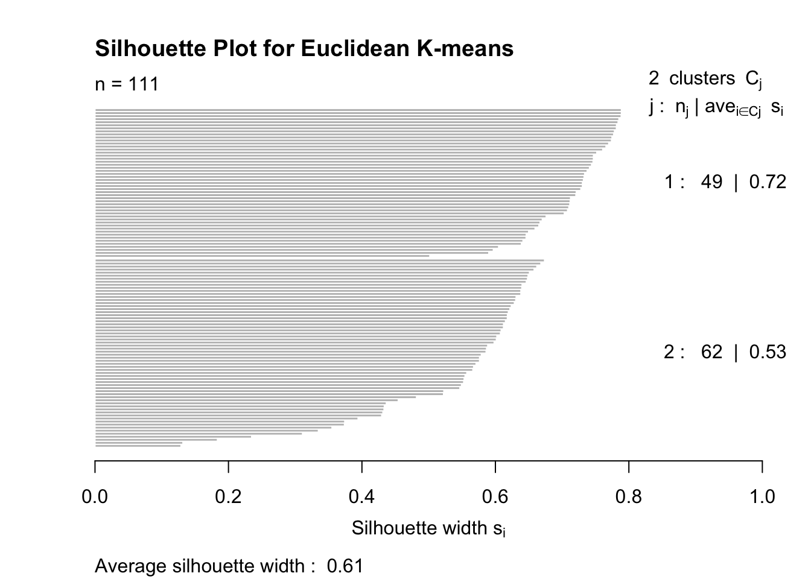
# Calculate silhouette scores for Manhattan K-means
silhouette_manhattan <- silhouette(kmeans_res_manhattan$cluster, dist(filtered_data, method = "manhattan"))
plot(silhouette_manhattan, main = "Silhouette Plot for Manhattan K-means")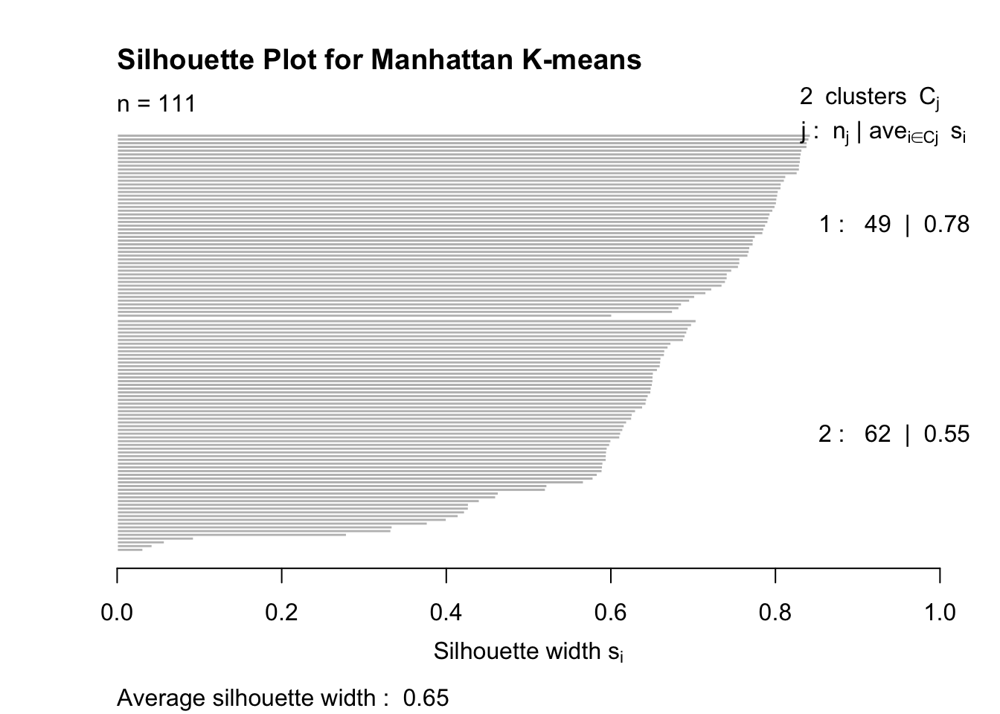
Cluster Validation Metrics
Additional metrics can provide further validation of clustering results.
library(NbClust)
# Use NbClust to determine the optimal number of clusters
nb <- NbClust(filtered_data, min.nc = 2, max.nc = 10, method = "kmeans")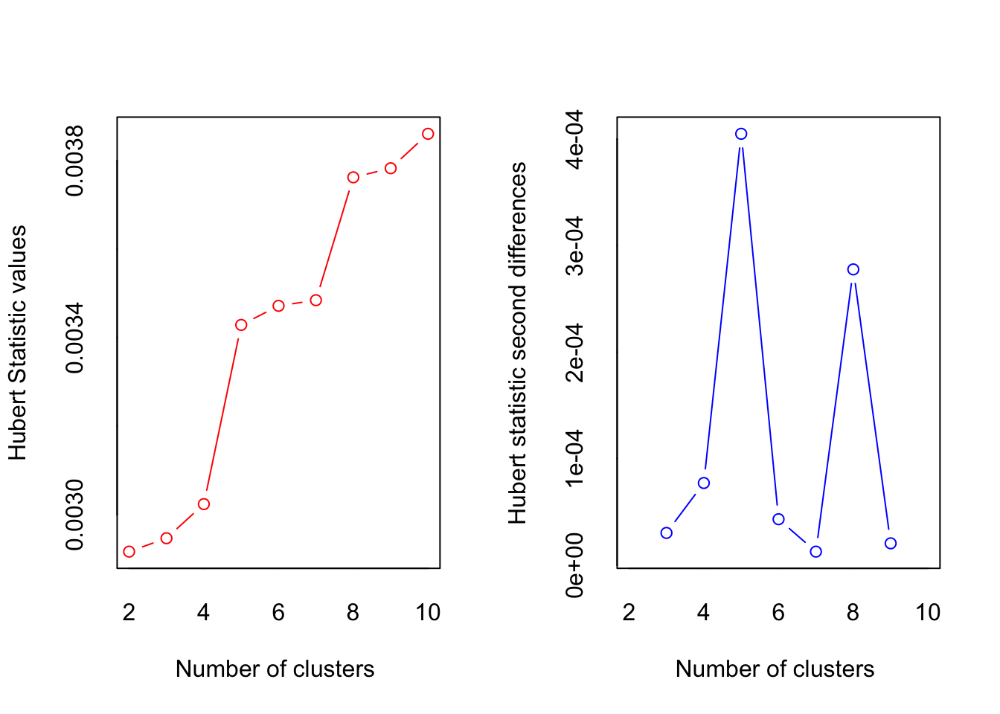
*** : The Hubert index is a graphical method of determining the number of clusters.
In the plot of Hubert index, we seek a significant knee that corresponds to a
significant increase of the value of the measure i.e the significant peak in Hubert
index second differences plot.
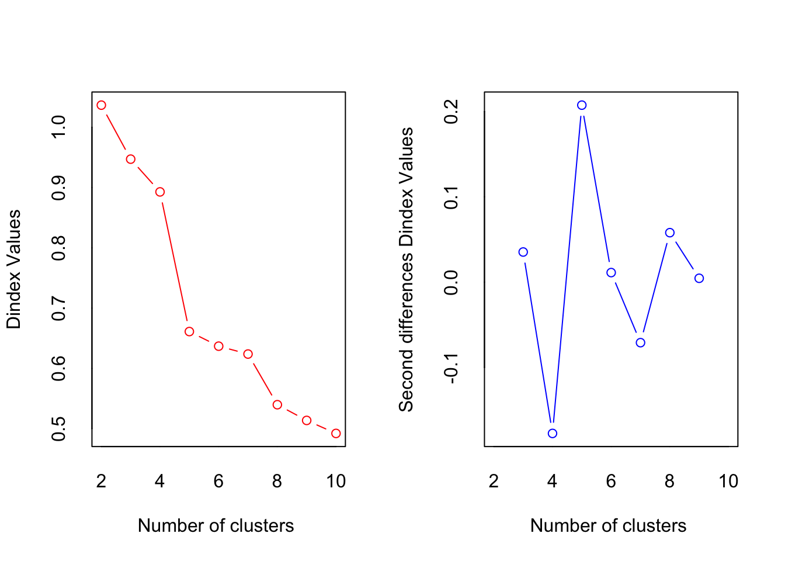
*** : The D index is a graphical method of determining the number of clusters.
In the plot of D index, we seek a significant knee (the significant peak in Dindex
second differences plot) that corresponds to a significant increase of the value of
the measure.
*******************************************************************
* Among all indices:
* 12 proposed 2 as the best number of clusters
* 2 proposed 3 as the best number of clusters
* 8 proposed 5 as the best number of clusters
* 2 proposed 10 as the best number of clusters
***** Conclusion *****
* According to the majority rule, the best number of clusters is 2
******************************************************************* 2. Hierarchical Clustering:
# Using our cleaned data: "filtered_data"
# Compute the distance matrix
dist_matrix <- dist(filtered_data, method = "euclidean")
# Perform hierarchical clustering
hc <- hclust(dist_matrix, method = "complete")
# Plot the dendrogram
plot(hc, main = "Dendrogram of Hierarchical Clustering", xlab = "Branches", ylab = "Euclidean Distance", labels = FALSE)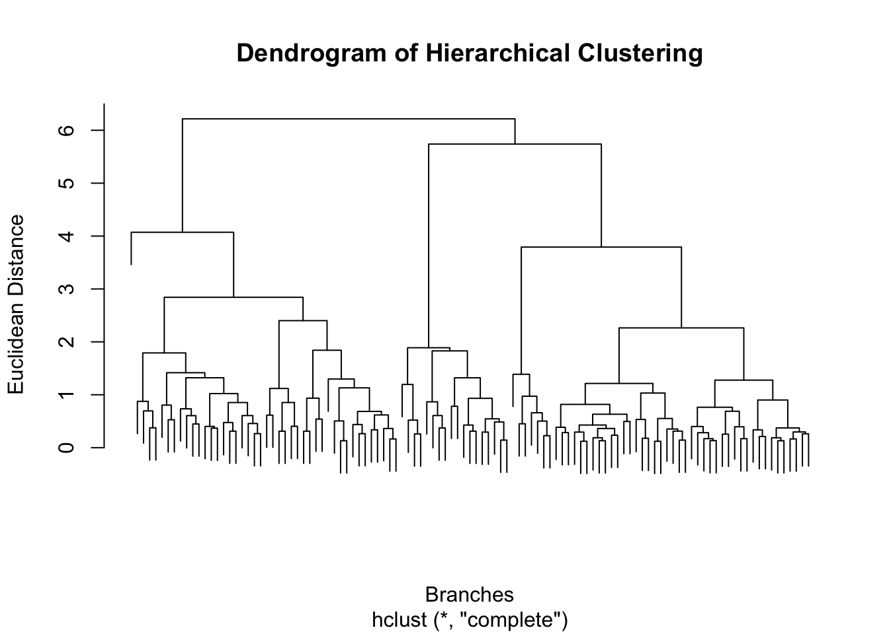
Visualising the output from our Hierarchical Clustering using PCA:
# Convert PCA results to a data frame for ggplot2
pca_df <- as.data.frame(pca_res$x)
# Perform Hierarchical Clustering
dist_matrix <- dist(filtered_data, method = "euclidean")
hc <- hclust(dist_matrix, method = "complete")
# Cut dendrogram to form clusters
clusters <- cutree(hc, k = 3) # Adjust k based on the desired number of clusters
# Add cluster assignments to the PCA data
pca_res$clusters <- as.factor(clusters)
# Visualize the clusters using PCA for dimensionality reduction
ggplot(pca_res, aes(x = PC1, y = PC2, color = clusters)) +
geom_point(size = 3) +
labs(title = "PCA of Hierarchical Clustering", x = "PC1", y = "PC2") +
theme_minimal()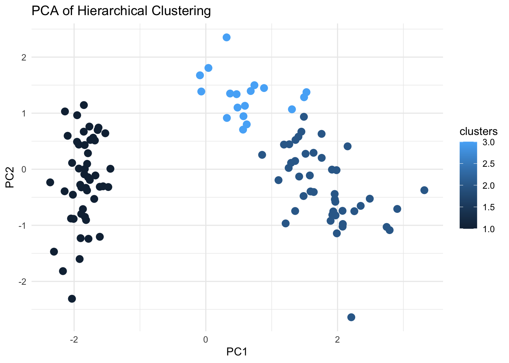
3. Probabilistic Clustering:
# Data Prep:
data(iris)
data <- iris[, 1:4] # Use only numerical features
# Normalize/Scale the data
scaled_data <- scale(data)
# Fit the Gaussian Mixture Model
model <- Mclust(data)The output from the model indicates that the GMM identified 2 clusters with the same shape and variance.
- Cluster 1: Contains 50 data points.
- Cluster 2: Contains 100 data points.
# View model summary
summary(model)----------------------------------------------------
Gaussian finite mixture model fitted by EM algorithm
----------------------------------------------------
Mclust VEV (ellipsoidal, equal shape) model with 2 components:
log-likelihood n df BIC ICL
-215.726 150 26 -561.7285 -561.7289
Clustering table:
1 2
50 100 # Plot the clustering results
plot(model, what = "classification")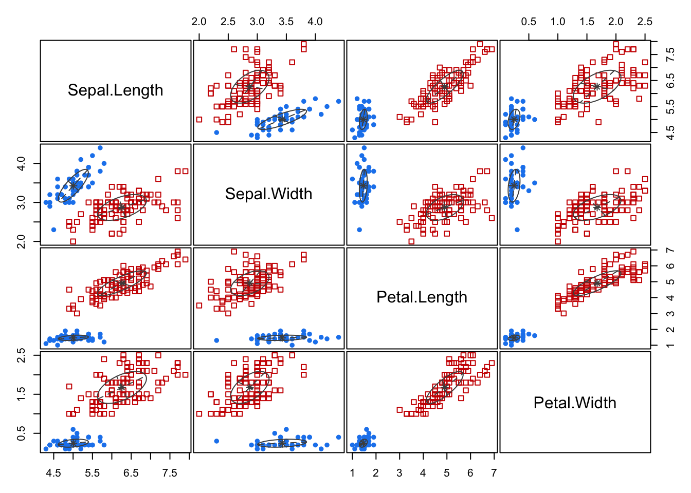
# Predict cluster memberships for new data
new_data <- data[1:5, ]
predictions <- predict(model, new_data)
print(predictions$classification)[1] 1 1 1 1 14. Density-Based Clustering (DBSCAN):
DBSCAN identifies clusters based on the density and noise of data points. It is particularly useful for finding clusters of arbitrary shape and handling high-noise datasets.
# Load necessary libraries
library(dbscan)
library(ggplot2)
# Data Prep:
data("iris")
iris <- as.matrix(iris[, 1:4])
# Remove rows with missing values
clean_data <- na.omit(iris)
# Normalize/Scale the data
scaled_data <- scale(clean_data)Determine suitable DBSCAN parameters:
eps= size (radius) of the epsilon neighborhoodWhere there is a sudden spike (increase) in the
kNNdistance = points to the right of this spike are most likely outliers.Choose this kNN distance as the ‘eps’
# Visualize the k-NN distance plot for eps parameter
kNNdistplot(scaled_data, minPts = 5) 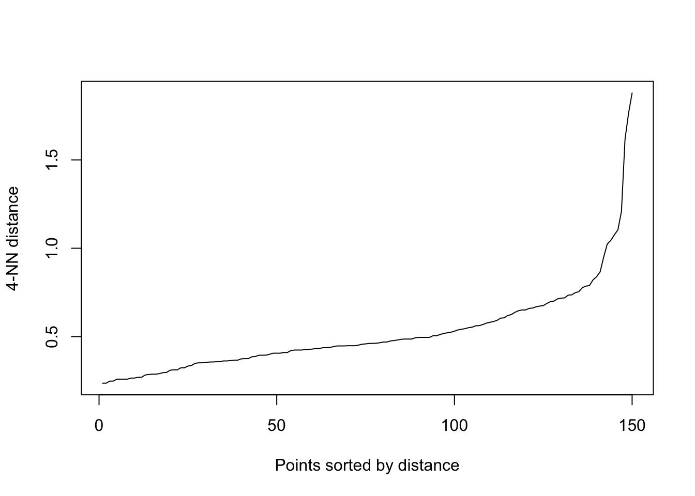
Add a line where approximately the noise starts. We see at
~0.8 the noise begins:
kNNdistplot(scaled_data, minPts = 5)
abline(h = 0.8, col = "red", lty = 2) 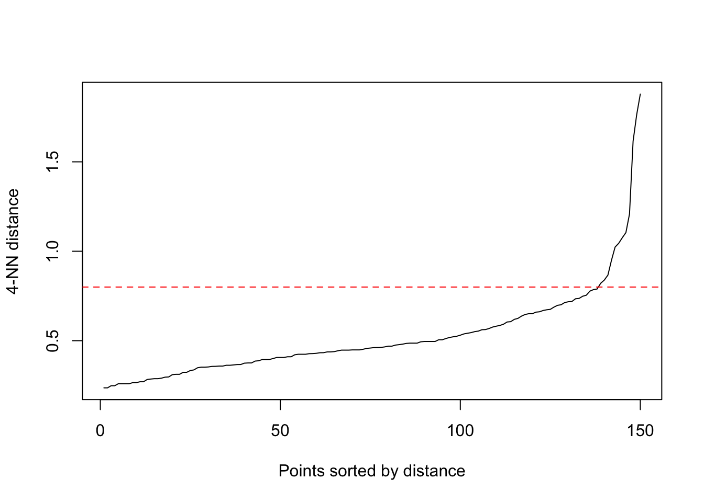
Now we can perform DBSCAN clustering:
# Perform DBSCAN clustering
eps <- 0.8 # Set eps based on the k-NN distance plot
minPts <- 5 # minPts is set to the number of features + 1
dbscan_result <- dbscan(scaled_data, eps = eps, minPts = minPts)
dbscan_resultDBSCAN clustering for 150 objects.
Parameters: eps = 0.8, minPts = 5
Using euclidean distances and borderpoints = TRUE
The clustering contains 2 cluster(s) and 4 noise points.
0 1 2
4 49 97
Available fields: cluster, eps, minPts, metric, borderPoints# Add cluster assignments to the original data
airquality_clustered <- cbind(clean_data, cluster = as.factor(dbscan_result$cluster))
# Visualize the clusters using PCA for dimensionality reduction
pca <- prcomp(scaled_data, scale. = TRUE)
pca_df <- as.data.frame(pca$x)
pca_df$cluster <- as.factor(dbscan_result$cluster)
ggplot(pca_df, aes(x = PC1, y = PC2, color = cluster)) +
geom_point(size = 3) +
labs(title = "PCA of DBSCAN Clustering", x = "PC1", y = "PC2") +
theme_minimal()
sessionInfo()R version 4.4.1 (2024-06-14)
Platform: aarch64-apple-darwin20
Running under: macOS Sonoma 14.6.1
Matrix products: default
BLAS: /Library/Frameworks/R.framework/Versions/4.4-arm64/Resources/lib/libRblas.0.dylib
LAPACK: /Library/Frameworks/R.framework/Versions/4.4-arm64/Resources/lib/libRlapack.dylib; LAPACK version 3.12.0
locale:
[1] en_US.UTF-8/en_US.UTF-8/en_US.UTF-8/C/en_US.UTF-8/en_US.UTF-8
time zone: Africa/Johannesburg
tzcode source: internal
attached base packages:
[1] stats graphics grDevices utils datasets methods base
other attached packages:
[1] NbClust_3.0.1 caret_6.0-94 lattice_0.22-6 mclust_6.1.1
[5] dbscan_1.2-0 ggfortify_0.4.17 dendextend_1.17.1 tidyr_1.3.1
[9] Rtsne_0.17 factoextra_1.0.7 ggplot2_3.5.1 cluster_2.1.6
[13] dplyr_1.1.4
loaded via a namespace (and not attached):
[1] pROC_1.18.5 gridExtra_2.3 rlang_1.1.4
[4] magrittr_2.0.3 git2r_0.33.0 compiler_4.4.1
[7] vctrs_0.6.5 reshape2_1.4.4 stringr_1.5.1
[10] pkgconfig_2.0.3 fastmap_1.2.0 backports_1.5.0
[13] labeling_0.4.3 utf8_1.2.4 promises_1.3.0
[16] rmarkdown_2.28 prodlim_2024.06.25 purrr_1.0.2
[19] xfun_0.47 cachem_1.1.0 jsonlite_1.8.8
[22] recipes_1.1.0 highr_0.11 later_1.3.2
[25] broom_1.0.6 parallel_4.4.1 R6_2.5.1
[28] bslib_0.8.0 stringi_1.8.4 parallelly_1.38.0
[31] car_3.1-2 rpart_4.1.23 lubridate_1.9.3
[34] jquerylib_0.1.4 Rcpp_1.0.13 iterators_1.0.14
[37] knitr_1.48 future.apply_1.11.2 httpuv_1.6.15
[40] Matrix_1.7-0 splines_4.4.1 nnet_7.3-19
[43] timechange_0.3.0 tidyselect_1.2.1 rstudioapi_0.16.0
[46] abind_1.4-5 yaml_2.3.10 viridis_0.6.5
[49] timeDate_4032.109 codetools_0.2-20 listenv_0.9.1
[52] tibble_3.2.1 plyr_1.8.9 withr_3.0.1
[55] evaluate_0.24.0 future_1.34.0 survival_3.7-0
[58] pillar_1.9.0 ggpubr_0.6.0 carData_3.0-5
[61] foreach_1.5.2 stats4_4.4.1 generics_0.1.3
[64] rprojroot_2.0.4 munsell_0.5.1 scales_1.3.0
[67] globals_0.16.3 class_7.3-22 glue_1.7.0
[70] tools_4.4.1 data.table_1.16.0 ModelMetrics_1.2.2.2
[73] gower_1.0.1 ggsignif_0.6.4 fs_1.6.4
[76] grid_4.4.1 ipred_0.9-15 colorspace_2.1-1
[79] nlme_3.1-166 cli_3.6.3 workflowr_1.7.1
[82] fansi_1.0.6 viridisLite_0.4.2 lava_1.8.0
[85] gtable_0.3.5 rstatix_0.7.2 sass_0.4.9
[88] digest_0.6.37 ggrepel_0.9.5 farver_2.1.2
[91] htmltools_0.5.8.1 lifecycle_1.0.4 hardhat_1.4.0
[94] MASS_7.3-61